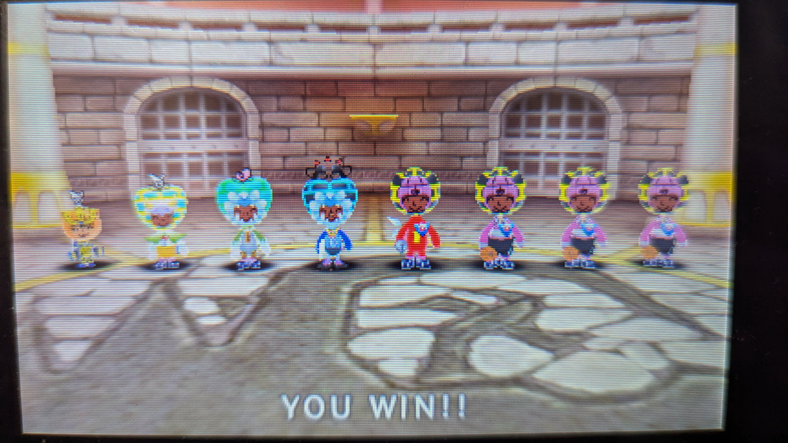

内容自体はそこそこ楽だったんですが、
応用例題の混合気体には頭を悩まされました。
そういえば久しぶりに電波人間を触ってみました。
最近(2年前)にペナ無視ができるようになったので
一日100Jも夢じゃなくなりましたし、
福袋も無限に引けるようになって最高です。
ちなみに今のPTはこんな感じです。

ぼやけまくってて見えにくいですが、左から順に
主人公、皆完復、皆全回、皆タイタン、攻撃4人
って感じです。結構粗削りです。
ハートの三人は最大でも最速でもないし、
色もめちゃくちゃ適当だし、主人公は
伝説装備一式のままだし。(これは愛着)
せめて色くらいはいい感じにしたかったのですが、
ノマキャでチューリップ30人くらい集めて
ハートが3人とかだったんで諦めました。😟
ですがc.s channelさんが上げてくださっている
イベキャから最大桃桃捕獲レンガを作る動画が
最高すぎて今モチベが最高潮なんですよね。
見たい方はこちらからどうぞ
これ本当にすごいですよね。あのイベキャから？
って感想しか出てこないです。本当に。
やったことない人は実際にやってみてください。
(E-shopサ終してるからできないけど)
本当にすごいですから。
話がズレまくりましたね。何の話してたっけ？
ていうか明日Engageテストですよ。
ほぼ何も触ってないんですけど。終わったかな？
まあさっき一周なんとなく見たのでわかるはず。
(多分無理)
ていうかこんなの書いてないでさっさと勉強しろ
って話ですよね。ということで今回はこの辺で。
また今度！